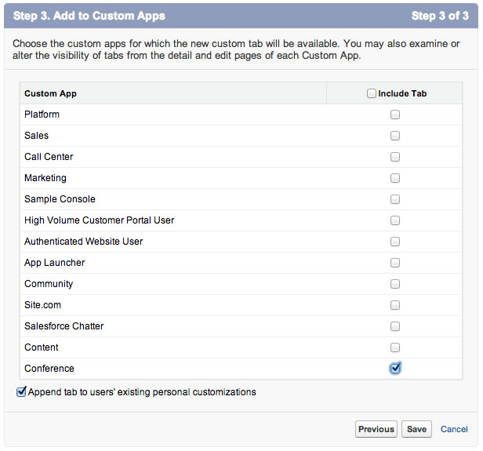

Module 9: Using JavaScript in Visualforce Pages
In this module, you create a custom controller with a method that returns a list of conference hotels. You create a Visualforce page that invokes that method using JavaScript Remoting, and uses the Google Maps SDK to display the hotels on a map.

Step 1: Create the Hotel Object
In Setup, select Build > Create > Objects
Click New Custom Object, and define the Hotel Object as follows:
- Label: Hotel
- Plural Label: Hotels
- Object Name: Hotel
- Record Name: Hotel Name
- Data Type: Text
Click Save
In the Custom Fields & Relationships section, click New, and create a Location field defined as follows:
- Data Type: Geolocation
- Field Label: Location
- Latitude and Longitude Display Notation: Decimal
- Decimal Places: 7
- Field Name: Location
Click Next, Next, Save
Create a Tab for the Hotel object
- In Setup, select Build > Create > Tabs
- In the Custom Object Tabs section, click New
- Select the Hotel object and Building as the Tab Style Icon
- Click Next, Next
- Uncheck the Include Tab checkbox, check the Conference checkbox, and click Save

Enter a couple of hotels with location information. For example:
- Marriott Marquis (37.785143 -122.403405)
- Hilton Union Square (37.786164 -122.410137)
- Hyatt (37.794157 -122.396311)

Step 2: Create the HotelRemoter Controller
In the Developer Console, select File > New > Apex Class, specify HotelRemoter as the class name and click OK
Implement the class as follows:
global with sharing class HotelRemoter { @RemoteAction global static List<Hotel__c> findAll() { return [SELECT Id, Name, Location__Latitude__s, Location__Longitude__s FROM Hotel__c]; } }Save the file
Step 3: Create a Visualforce Page with Google Maps
In the Developer Console, select File > New > Visualforce Page, specify HotelMap as the page name and click OK
Implement HotelMap as follows:
<apex:page sidebar="false" showheader="false"> <head> <style type="text/css"> html { height: 100% } body { height: 100%; margin: 0; padding: 0 } #map-canvas { height: 100% } </style> <script src="https://maps.googleapis.com/maps/api/js?sensor=false"></script> <script> var map; function initialize() { var mapOptions = { center: new google.maps.LatLng(37.784173, -122.401557), zoom: 15 }; map = new google.maps.Map(document.getElementById("map-canvas"), mapOptions); } google.maps.event.addDomListener(window, 'load', initialize); </script> </head> <body> <div id="map-canvas"/> </body> </apex:page>Save the file
Click the Preview button (upper left corner) to test the HotelMap page in the browser
Step 4: Display the Hotels on the Map
Assign HotelRemoter as the controller for the HotelMap Visualforce page:
<apex:page sidebar="false" showheader="false" controller="HotelRemoter">Define a function named loadHotels() implemented as follows (right after the initilize() function):
function loadHotels() { Visualforce.remoting.Manager.invokeAction('{!$RemoteAction.HotelRemoter.findAll}', function(result, event){ if (event.status) { for (var i=0; i<result.length; i++) { var id = result[i].Id; var name = result[i].Name; var lat = result[i].Location__Latitude__s; var lng = result[i].Location__Longitude__s; addMarker(id, name, lat, lng); } } else { alert(event.message); } }, {escape: true} ); }Define the addMarker() function implemented as follows (right after the loadHotels() function):
function addMarker(id, name, lat, lng) { var marker = new google.maps.Marker({ position: new google.maps.LatLng(lat, lng), map: map, title: name }); google.maps.event.addListener(marker, 'click', function(event) { window.top.location = '/' + id; }); }Invoke loadHotels() as the last line of the initialize() function:
loadHotels();Save the file
Click the Preview button (upper left corner) to test the HotelMap page in the browser. You should now see markers on the map representing the hotels you entered in Step 1.
- Creating a Developer Edition Account
- Creating the Data Model
- Creating the Application
- Creating an Apex Class
- Accessing Data using SOQL and DML
- Creating Triggers
- Creating a Visualforce Page
- Creating a Controller Extension
- Using JavaScript in Visualforce Pages
- Using the Salesforce1 Platform APIs
- Testing
- Batch and Schedule